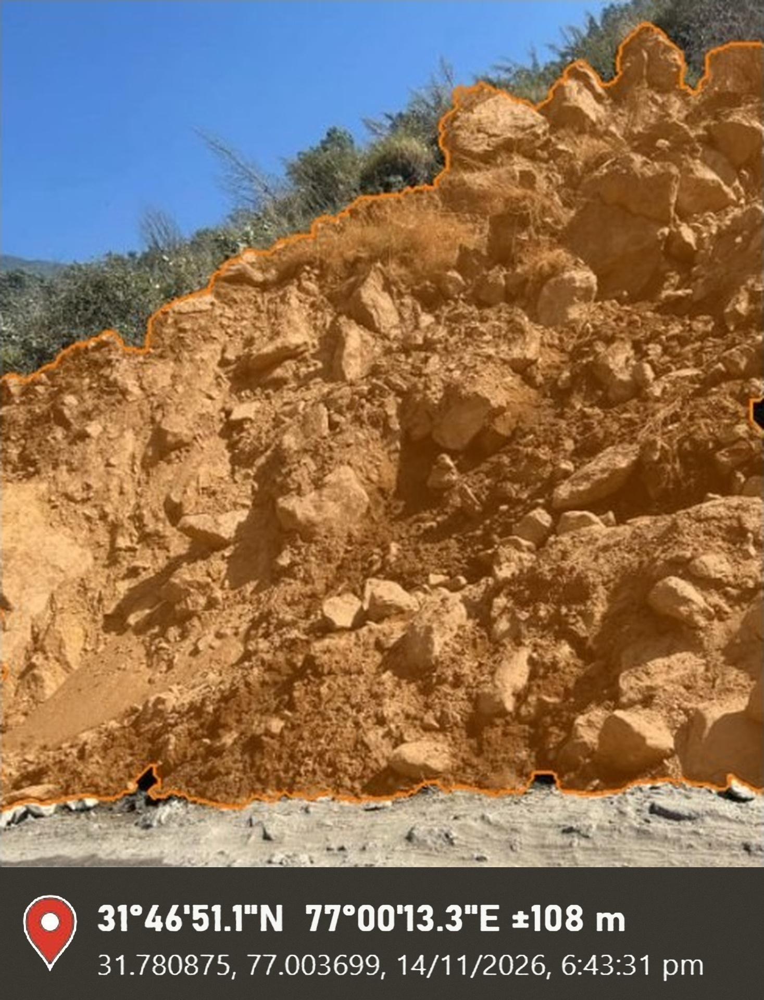

Hard terrain. Limited time.
Mountain roads and steep valleys make observation and documentation difficult.

From ground-level phone photographs to landslide types,
uncertain dimensions and a traceable field report.
Mountain roads and steep valleys make observation and documentation difficult.
Approaching an unstable face can expose engineers to falling material.
Type, scale and geometry need interpretation before a useful field record can be made.
Select a category to inspect its mechanism, field clues and test evidence. Hungr et al. (2014) groups · “reject” is a separate photo-quality task.
Related titles, photo series and visual similarity link photographs before splitting. A familiar landslide cannot appear on both sides of the evaluation.
The repository report says all current labels are AI annotations. Blind human re-labelling remains an open validation step.
The poster says “human labelled”; this deck follows the explicit label provenance in report.md §2. Counts are the reported frozen dataset.
Original + 3 phone-style copies.
Site groups stay intact in CV.
Each backbone feeds a usability head and a six-class type head.
Class-balanced logistic regression; regularisation selected by site-grouped cross-validation.
Selected on train + validation across site, source, region and camera shifts. No vertical flips: viewpoint carries information.
263 usable photos · 152 unseen sites
Ensemble macro-F1 95% CI: 0.688–0.857 · site bootstrap
Measured train/validation OOF results · type head before the photo gate · slider selects reported thresholds, not new experiments.
Held-out test recall = share of each labelled class recovered.
Small classes have substantial uncertainty. All labels are AI-made.
Correct type among confident answers
on usable photos in the full app.
Full-pipeline precision is 60.5%. Of all confident answers, 29.5% are on photos that should have been rejected.
Average the six per-class F1 scores equally, so frequent classes do not dominate.

One photo’s output. The confidence is not the model’s overall test accuracy.
Estimated values, not surveyed ground truth. Absolute size validation is still pending.
Built for mountain-road inspections, landslide documentation and post-rainfall assessment.
Faculty mentor
Dr. Kala Venkata Uday
Decision support only.
Confirm findings with a geologist or geotechnical engineer before acting.